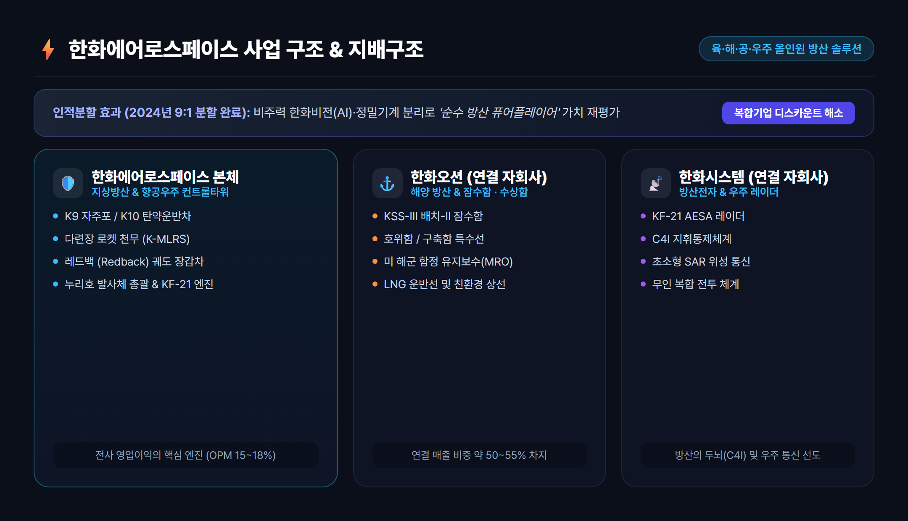
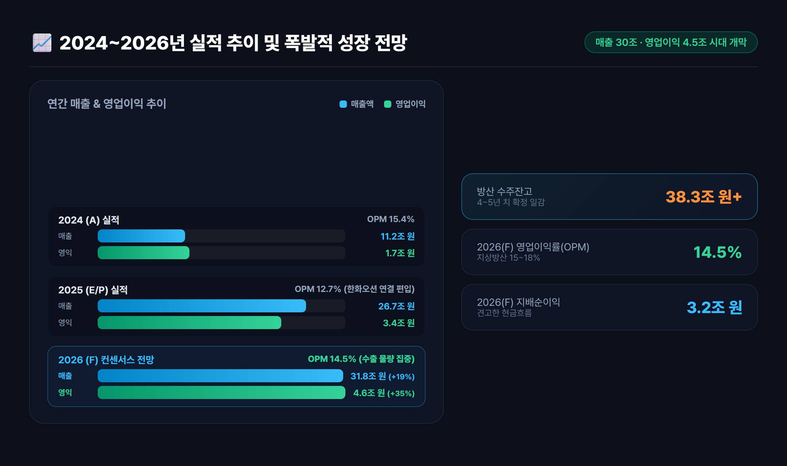
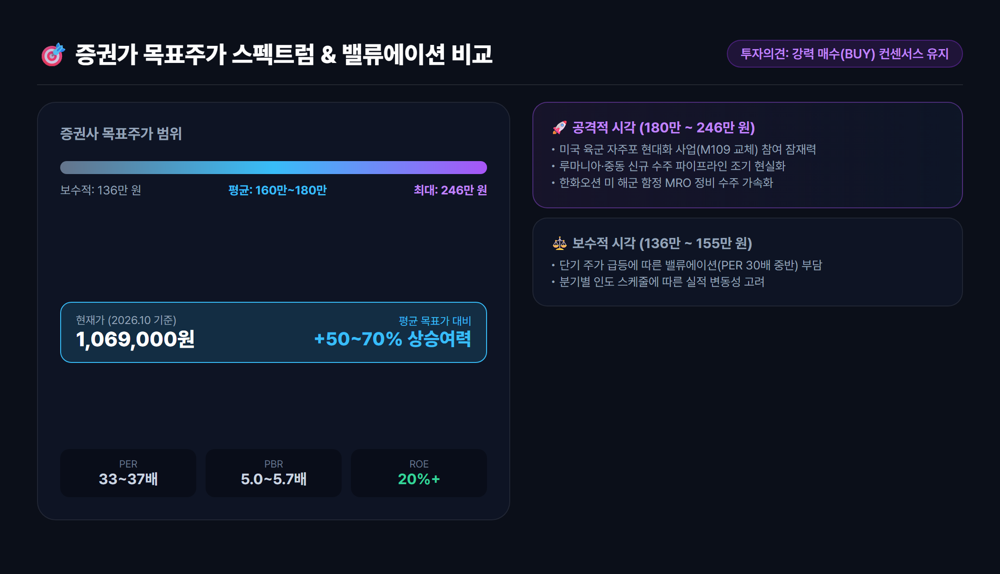
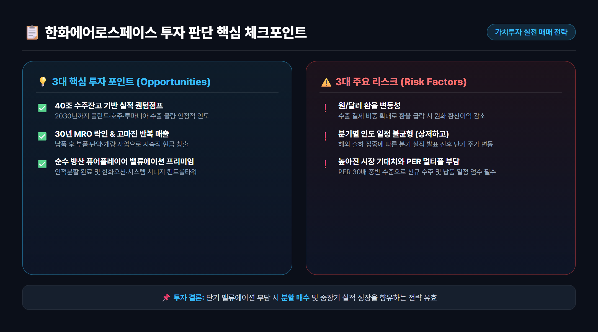

1. 기업 개요 및 인적분할: 순수 방산·우주 컨트롤타워로 재탄생
한화에어로스페이스(012450)는 대한민국을 넘어 글로벌 방위산업 시장에서 독보적인 위상을 확보한 지상·해양·항공우주 통합 방산 체계종합 기업입니다.

인적분할을 통한 '순수 방산' 가치 재평가
한화에어로스페이스는 2024년 AI 비전 솔루션을 영위하는 한화비전과 반도체 장비 제조 부문인 한화정밀기계를 9:1 비율로 인적분할하여 신설법인(한화인더스트리얼솔루션즈)으로 독립시켰습니다.
이 분할을 통해 한화에어로스페이스는 다음과 같은 결정적 도약의 발판을 마련했습니다:
- 복합기업 디스카운트(Conglomerate Discount) 해소: 비주력 제조업을 떼어내고 순수 방산·항공우주 기업으로 재정의되어 글로벌 피어(Peer) 그룹 대비 정당한 밸류에이션 멀티플을 적용받게 되었습니다.
- 방산 3사 시너지의 컨트롤타워 구축: 자회사인 한화오션(특수선·잠수함·해양MRO)과 한화시스템(레더·지휘통제 C4I·위성통신)의 지분을 보유하며 육·해·공·우주를 유기적으로 연결하는 종합 방산 솔루션 체제를 확립했습니다.
2. 3대 핵심 무기체계(K9·천무·레드백)와 글로벌 수출 파이프라인
한화에어로스페이스의 핵심 경쟁력은 서구권 경쟁 방산 기업들이 흉내 내기 힘든 압도적인 납기 신속성, 검증된 실전 성능, 그리고 합리적인 가성비에 있습니다.

① K9 자주포: 글로벌 시장 점유율 50% 이상의 '절대 강자'
- 폴란드 1·2·3차 계약: 1차 실행계약(212문) 인도를 완료한 데 이어 2차(152문) 및 현지 생산 물량이 순차적으로 공급되고 있습니다.
- 루마니아 수주 및 'H-ACE 유럽' 공장 착공: 루마니아와 약 1.38조 원 규모의 K9 자주포(54문) 및 K10 탄약운반차(36대) 공급 계약을 맺고, 유럽 현지 생산 거점을 확보했습니다.
- 호주(AS9 헌츠맨) 및 이집트: 호주 질롱 공장 본격 가동과 함께 이집트 현지화 양산이 이어지고 있습니다.
② 천무 다련장 로켓(K-MLRS): 정밀 타격 유도무기 시장의 게임 체인저
- 폴란드 '호마르-K' (Homar-K): 폴란드 군용 차체(Jelcz)에 천무 발사대를 탑재하고 현지 합작법인을 통해 유도탄 현지 조립 생산을 진행 중입니다.
- 중동 및 발트 3국 확장: UAE, 사우디아라비아에 이어 에스토니아 등 북유럽·동유럽 공급망이 빠르게 확장되고 있습니다.
③ 레드백 (Redback) 보병전투장갑차(IFV): 미래 지상전의 핵심
- 호주 랜드 400 3단계(Land 400 Phase 3): 글로벌 유수 기업들을 제치고 총 129대(약 3.16조 원) 수주를 확정 지었으며, 2026년부터 본격적인 양산 인도가 시작됩니다.
- 유럽 추가 수주 타겟: 루마니아 및 중동 지역의 차세대 장갑차 도입 사업에서 가장 유력한 후보로 거론되고 있습니다.
3. 2024~2026년 실적 분석: 매출 30조·영업이익 4조 돌파 전망
한화에어로스페이스의 실적은 단순한 단기 테마가 아닌, 확정된 수주잔고 기반의 구조적 퀀텀점프(Quantum Jump)를 보여주고 있습니다.

연간 실적 및 주요 재무 지표 추이
| 구분 | 2024 (A) | 2025 (E/P) | 2026 (F) | 비고 및 분석 요약 |
|---|---|---|---|---|
| 매출액 (조원) | 11.2 | 26.7 | 31.8 | 한화오션 연결 편입 및 방산 수출 본격화 |
| 영업이익 (조원) | 1.7 | 3.4 | 4.6 | 고마진 해외 수출 믹스 개선 (전년비 +35%) |
| 영업이익률 (%) | 15.4% | 12.7% | 14.5% | 지상방산 부문 15~18% OPM 유지 |
| 지배주주 순이익 (조원) | 1.2 | 2.3 | 3.2 | 견고한 현금 창출력 지속 |
| 방산 수주잔고 (조원) | 32.0 | 36.5 | 38.3+ | 4~5년 치 이상의 안정적인 일감 확보 |
2026년 실적의 핵심: '상저하고(上低下高)' 패턴
상반기에는 지상방산 부문의 생산 라인 전환 및 인도 스케줄 조정으로 일시적인 실적 숨고르기가 나타났으나, 하반기부터 폴란드향 2차 물량 인도 집중, 루마니아 공장 착공 매출 인식, 호주 레드백 초도 물량 출하가 겹치며 연간 최대 실적을 경신할 전망입니다.
4. 밸류에이션 및 증권사 목표주가 비교: 매수 매력도는?

현재 주가 밸류에이션 수준 (2026.10 기준)
- 현재 주가: 1,069,000원
- 시가총액: 약 55조 2,759억 원 (코스피 시총 4~5위권 안착)
- PER (주가수익비율): 33.0배 ~ 37.4배
- PBR (주가순자산비율): 5.0배 ~ 5.7배
- ROE (자기자본이익률): 18.5% ~ 22.0% 수준
증권가 목표주가 스펙트럼 분석
국내 증권사들은 대부분 투자의견 '매수(BUY)'를 유지하고 있으며, 목표주가 밴드는 136만 원 ~ 246만 원(평균 160만~180만 원 선)으로 형성되어 있습니다.
💡 밸류에이션 핵심 관전 포인트:
• 보수적 관점 (136만 ~ 155만 원): 단기 주가 상승에 따른 밸류에이션(PER 30배 중반) 부담 및 상반기 납품 지연 반영.
• 공격적 관점 (180만 ~ 246만 원): 루마니아·중동 수주 조기 가시화 및 미국 육군 자주포 현대화 사업(M109 교체) 참여 잠재력.
5. 핵심 투자 포인트 3가지 vs 투자 시 주의할 리스크
💡 핵심 투자 포인트 (Investment Highlights)
- 무기체계 라이프사이클 MRO 락인(Lock-in) 효과: 무기체계는 1회 판매로 끝나지 않고, 향후 30~40년간 부품 교체, 탄약 조달, 성능 개량(MRO)을 통해 지속적이고 높은 마진의 반복 매출(Recurring Revenue)을 창출합니다.
- K-방산 글로벌 공급망 거점화: 폴란드 합작법인, 호주 질롱 공장, 루마니아 H-ACE 공장 등 글로벌 현지 생산 기지를 선점하여 유럽/나토(NATO) 및 오세아니아 표준 무기체계로 굳건히 자리매김하고 있습니다.
- 미래 우주항공 컨트롤타워: 누리호 반복 발사를 총괄하는 체계종합 기업이자 차세대 전투기(KF-21) 엔진 국산화를 도맡아 중장기 미래 성장 동력을 완벽히 확보했습니다.
⚠️ 투자 시 점검해야 할 리스크 (Risks)
- 환율 민감도: 매출의 상당 부분이 달러화 및 외화 결제로 이루어져 원/달러 환율이 급락할 경우 원화 기준 영업이익이 다소 감소할 수 있습니다.
- 분기별 실적 변동성: 해외 납품 일정이 특정 분기에 집중되는 경향이 있어 분기 실적 발표 시점마다 주가 단기 변동성이 확대될 수 있습니다.
- 높아진 기대치와 멀티플: 시장 컨센서스가 매우 높게 형성되어 있어 신규 수주 공시나 납품 일정이 지연될 경우 주가 조정 요인으로 작용할 수 있습니다.
6. 최종 요약 및 실전 투자 전략

한화에어로스페이스(012450)는 '40조 원 수주잔고 + 독보적인 생산 납기 경쟁력 + 순수 방산 퓨어 플레이어 전환'이라는 3박자를 모두 갖춘 기업입니다.
단기적으로는 주가 급등에 따른 밸류에이션 숨고르기가 나타날 수 있으나, 2026년 하반기 실적 급증과 2030년까지 이어지는 견고한 수주 이행을 감안할 때 분할 매수 및 중장기 가치투자 관점에서 매우 매력적인 대장주로 판단됩니다.